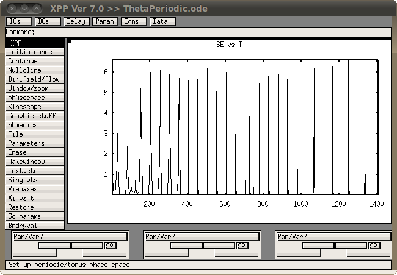
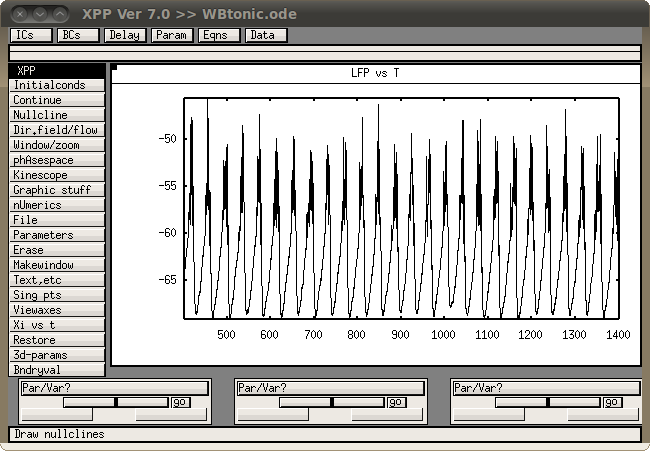
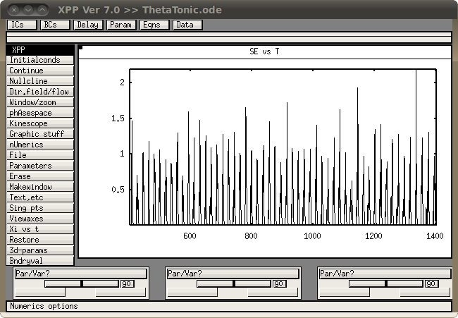
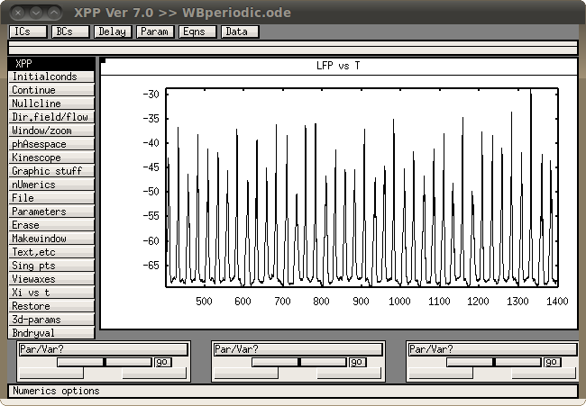

This is the readme for the model associated with the paper Komek K, Bard Ermentrout G, Walker CP, Cho RY (2012) Dopamine and gamma band synchrony in schizophrenia--insights from computational and empirical studies. Eur J Neurosci 36:2146-55 These xpp model files were contributed by Kubra Komek. xpp is free software by Bard Ermentrout available at http://www.pitt.edu/~phase/ Usage: You can start under uniz/linux with a command like xppaut ThetaPeriodic.ode If you then click on Initialconds -> (G)o and then Window/Zoom -> (F)it you should see a graph like (corresponds to paper fig 7)  Running the following files similarly, leads to these images which correspond to the paper figures in parentheses: WBtonic.png: (fig 3)  ThetaTonic.ode: (fig 5)  WBperiodic.ode: (fig 6)  The procedure for the simulations was to run the code for 20 seconds, divide the results into 1 second bins, run FFT on LFP in Wang-Buzsaki model and on SE in the theta neuron model, then average across those. Also I varied some parameters in each simulation as described in the paper. This meant running the code in batch mode for a range of the specified parameter as described in the paper. The neuron models that I used were Wang-Buzsaki neuron and theta neuron. Wang-Buzsaki neuron was modeled after their original paper, Wang XJ, Buzsaki G (1996) Gamma oscillation by synaptic inhibition in a hippocampal interneuronal network model. J. Neurosci., 16, 6402- 6413. Theta neuron model is also known as the Ermentrout-Kopell canonical model (a link to the scholarpedia page describing it http://www.scholarpedia.org/article/Ermentrout-Kopell_canonical_model). An example batch file, BatchThetaTonic.ode, is identical to ThetaTonic.ode except that it has added lines (and added descriptions of those new lines) that control the running of the program in batch mode. To run the batch file make sure you are in the same directory as the ode file and type xppaut BatchThetaTonic.ode -silent on the command line. It runs without a GUI and will create 57 output files in the same directory starting with output.dat.0 and ending with output.dat.56 which indeed is the same as the first one. It takes about 5 minutes to complete on a 2008 Dell Lattitude E6400 laptop.